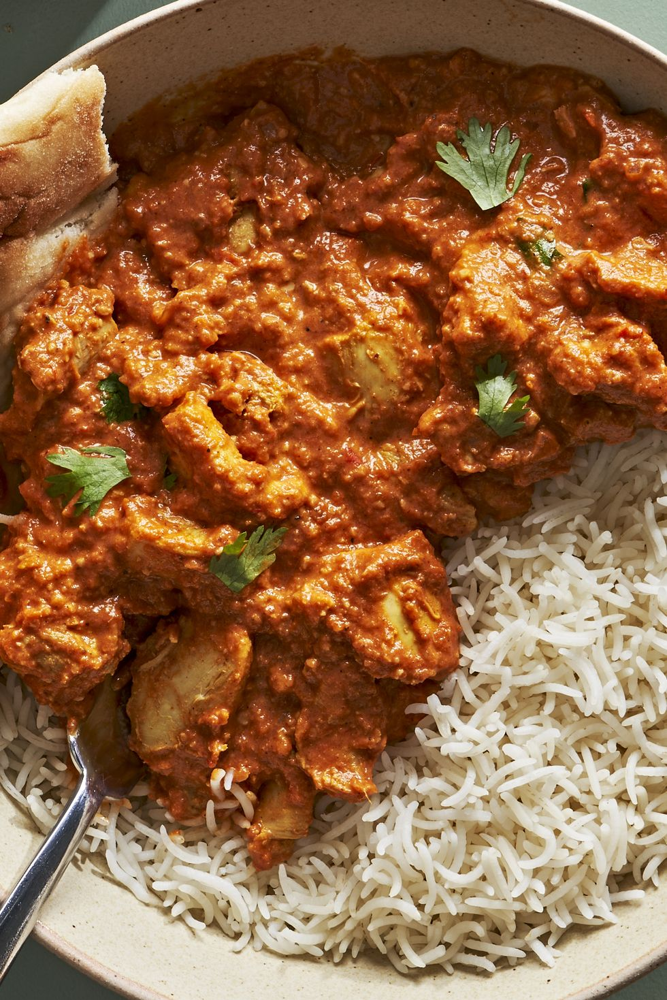

Butter Chicken

A collection of recipes from delish web!
Aside from a name that's a hoot to utter, Chicken Riggies (aka Utica, New York’s pasta
pride and joy) has a lot more going for it, namely that it's a spicy and a bit-sweet
pleasure to eat. It’s so good,
it might just become a new go-to weeknight dinner for all you non-Uticans out there.
Ingredients
- box (16 oz) rigatoni Fresh basil, chopped, for garnish
- 1 (1") piece ginger, peeled and finely chopped or grated
- 2 cloves garlic, finely chopped or grated
- 2 tsp. garam masala
- 1 tsp. chili powder
- 1 tsp. ground cumin
- 1 tsp. ground turmeric
Kosher salt
- 2 lb. boneless, skinless chicken thighs, cut into 1 1/2" cubes
- 2 tbsp. neutral oil
Recipe instructions (taken from the book)
- In a large bowl, whisk yogurt, ginger, garlic, garam masala, chili powder, cumin, turmeric, and 2 1/2 teaspoons salt. Stir in chicken and refrigerate at least 1 hour or up to 24.
- Transfer sauce to a blender, add cashews, and blend on high speed until very smooth. Pour sauce back into pan and stir in cream and chicken. Simmer until sauce is thickened and bubbling and chicken is cooked through, 5 to 8 minutes.
- Divide chicken among plates. Top with cilantro. Serve with rice and naan alongside.